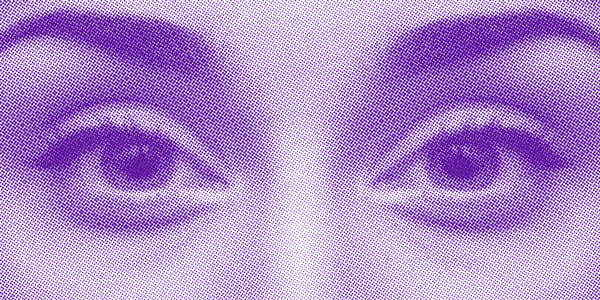

A lot more than you’d think.
Let’s start off with the awe-inspiring lyric: When the moon hits your eye like a big pizza pie.
That’s… astrology and pizza.
This line captures a verbal and visual rhyme happening between the two worlds. They’re both captivating. People have been drawn to the two for centuries. Oftentimes for the same reason. But let’s break it down together. Shall we?
First, they’re circular.
The moon, the stars, the planets, and their orbits are essentially a bunch of circles floating around the universe. Western astrologers simplified it all into a circular zodiac chart that’s sliced up into 12 houses. Yum.
Next, they’re timeless.
Humans have been looking up at the stars and trying to understand them for thousands of years. Even after being scientifically disproven in the 17th century, astrology made a comeback in the 20th century in newspapers; today, it’s everywhere. Astrology was and still is a practice of relating what’s happening up there to down here at a human level. For many, myself included, it’s a way to rationalize things that don’t feel so rational because the world right now isn’t rational.
Pizza, too, has been around for a while. What began as fancy flatbreads became the beauty we know today. I can only imagine, it’s been a go-to for drunchies ever since the dawn of time. Caveman, sailors and drunk girls alike know that one slice alone will bring you back into your body.
They’re personal.
Ever tried deciphering a birth chart on your own? Impossible. They’re complicated because they try to comprehensively capture a person. Let’s take the Western natal chart, for example. It uses the exact date, time, and location of your birth to recreate a snapshot of the sky at your precise moment of arrival. With this info, you are given a special place within the 12 houses, 12 planets, and 12 signs. Each house represents a different area of your life. Each planet symbolizes different ideas (e.g., Venus represents values and love). The signs show how the planets come into play. For instance, if Venus is about values and love, Venus in the airy zodiac sign of Gemini will express itself through curiosity, communication, and play. Confused? Just let an astrologer or app do it for you.
As for pizza, it’s a personal matter. Everyone’s got their favorite place. Their favorite slice. And many are ready to fight about it. I’m team Pizza Marvin forever baby. Come at me.
it’s a personal matter. Everyone’s got their favorite place. Their favorite slice. And many are ready to fight about it. I’m team Pizza Marvin forever baby. Come at me.
They’re social.
Astrology and pizza are a perfect party pairing. There’s nothing more heroic than walking into a party with a stack of pizzas. Once everyone’s full and happy, it’s time to read the stars. See what’s really up in everyone’s lives. And most importantly, double check if your friend is really compatible with her crush. It could save her some tears.
They’re comforting.
When life throws you a curveball, you could do one of two things: attack it dead on or cower into a little burrata ball and seek comfort. Both astrology and pizza are there for me in times of need. With one hand I can flip through my astrology app to see what lies ahead, and in the other, I can shove pizza into my mouth.
They’re cheesy.
Co-Star just told me: The union of imagination and reality is beautiful. Hell yeah. The cheesier, the better for both astrology and pizza. While my therapist gives it to me straight, astrology offers a poetic interpretation of what’s going on in my head. It makes the advice more palatable, just like cheese on bread–but I dare not overdo either. Let’s just say I’ll be too afraid to leave the house.
They’re commodified.
Along with everything else good in life, astrology and pizza have been co-opted by companies to sell their products. In 2019, Amazon sent out shopping recommendations as horoscopes to its Prime Insider subscribers. Parade, the D2C underwear company, just released “Zodiac Satin Cheeky & Tarot Card” bundles.
Pizza is no longer only edible. It’s wearable. It’s decorative. It’s even rideable. Name an object and someone’s probably made pizza-related. Pizza rocket? Done.
And lastly, they’re open to interpretation.
Different cultures and individuals have their own ways of interpreting the stars. Chinese astrology follows a 12-year lunar cycle whereas Western astrology follows a solar cycle. Vedic astrology focuses on astral patterns of light and how they influence the destiny or Dharma of humans. Astrologers, too, have their own styles. Some focus on the good, others dig into the bad (*cough cough* Co-Star,).
Similarly, the ever-inventive human race is constantly evolving the canvas that is a pizza. To name a few oddities: cheeseburger pizza, taco pizza, reindeer pizza, chili cheese frito pizza and last but not least, pizza pizza.
____ * ____ * ____ * ____
And now, for my own interpretation, which aims to capture all of these lovely parallels–misses–and settles on inspiration.
Psychic Slice
A pizza place that’s set on serving you fortunes along with some pizza. It borrows visual and verbal vernacular from the commercial worlds of astrology and pizza and takes a left turn to focus more on a loose-interpretation of tasseography (a divination or fortune-telling method that interprets patterns in tea leaves, coffee grounds, etc.) and less on zodiac signs. Recall: “inspiration.”
You see, this original mental connection between astrology and pizza set me on a journey to understand astrology’s origins and sent me deeper into a general understanding of divine practices. Enough to create my own with a diet staple: pizza.
So grab a slice.
Interpret the grease left behind as a symbol for your destiny.
And enjoy.